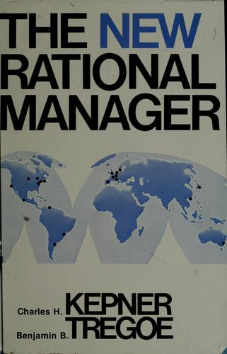

Módulo 05 / Apartado 3 de 5
Cerrarlo: Kepner-Tregoe
Dos investigadores de la RAND estudiando por qué la gente lista decide mal. De ahí sale la definición de problema como desviación, la rejilla ES / NO ES —lo mejor del temario— y la distinción MUST / WANT, que casi todo el mundo aplica al revés.
Quiénes eran y qué fallo querían arreglar
Charles Kepner y Benjamin Tregoe eran dos investigadores sociales de la RAND Corporation que en los años cincuenta se pusieron a estudiar por qué oficiales de las Fuerzas Aéreas —gente formada, con información y con tiempo— tomaba a veces decisiones malísimas. En 1958 montaron su propia consultora en Princeton, y en 1965 publicaron The Rational Manager.
El fallo que encontraron no es de inteligencia. Es de proceso, y es este:
Saltamos del síntoma a la causa presunta, y a partir de ahí discutimos sobre la causa presunta en lugar de sobre el problema.
Todo el aparato del libro existe para meter una cuña entre esos dos momentos. Y empieza por separar cuatro preguntas que en una reunión normal se hacen todas a la vez y en desorden.
Dicho en corto: si el rendimiento cayó y no sabes por qué, no convoques una reunión para elegir entre opciones. No tienes un menú. Tienes una desviación sin explicar, y cualquier opción que elijas será una apuesta con pinta de decisión.
Un problema es una desviación
Esta es la definición técnica de KT y hay que tomársela literalmente: un problema es algo que rendía a un nivel y ha dejado de hacerlo. Hay un «antes» contra el que comparar.
Si no hay ese antes, no es un problema en el sentido de KT, y la rejilla no va a morder. Será un objetivo que nunca se ha alcanzado, una decisión pendiente o una queja. Cosas legítimas, todas, pero que se tratan con otro proceso. Comprobar esto lleva quince segundos y ahorra reuniones enteras.
La rejilla ES / NO ES
Aquí está la aportación de verdad, y es lo mejor que hay en todo el temario oficial. Para encontrar la causa, KT no enumera causas posibles —eso lo hace Ishikawa, y ya lo has hecho en el apartado anterior—. Hace lo contrario: delimita por contraste hasta que solo una sobrevive.
Por cada dimensión del problema pregunta qué ES y, sobre todo, qué NO ES pero perfectamente podría haber sido. Esa segunda columna es el método entero: la información que descarta vale más que la que confirma.

El libro de esto The New Rational ManagerLa edición vigente del clásico de 1965. Los cuatro procesos con casos industriales trabajados paso a paso. Es el método al que el programa oficial da más peso, y el que sostiene el entregable: si tienes que aplicar algo de este módulo a un caso real, aplica esto — Charles H. Kepner y Benjamin B. Tregoe · 1981
MUST y WANT, que se usa mal en todas partes
El segundo proceso, el de decisión, aporta una distinción que parece trivial y no lo es. Al elegir entre alternativas hay dos tipos de criterio, y mezclarlos es el error estándar:
- MUST · obligatorio
- Binario y eliminatorio. Si una alternativa no lo cumple, sale. No se le baja la nota: sale de la lista. Y tiene que ser medible: «tiene que ser rápido» no es un MUST, «tiene que estar operativo antes del 30 de junio» sí.
- WANT · deseable
- Se pondera de 1 a 10 según lo que te importe, se puntúa cada alternativa, y se multiplican. Aquí sí hay compensación entre unas cosas y otras, que es exactamente para lo que sirve.
Meter un innegociable dentro de la lista ponderada. Pones «cumplimiento normativo» con peso 10 en la tabla, la alternativa A saca un 3 en eso y un 10 en todo lo demás, y gana por puntos. Acabas de elegir, con una tabla preciosa y aparentemente rigurosa, una opción ilegal.
Si algo es innegociable, no tiene peso: tiene puerta.
Y hay un segundo paso que casi nadie da. Una vez que sale la alternativa ganadora por puntuación, no se decide todavía. Se le hace análisis de riesgos adversos: ¿qué tiene esta opción concreta de malo que las otras no tenían? La puntuación no decide; identifica a la candidata.
El límite de todo esto
KT presupone dos cosas: que existe una causa localizable y que hubo un estado anterior correcto. Cuando las dos se cumplen, es de lo mejor que se ha inventado.
Cuando no se cumplen —varios actores con objetivos incompatibles, un sistema que se sostiene solo, ningún «antes» al que volver— la rejilla no tiene dónde morder. Y el temario, a propósito, mete al lado el método que ataca por el flanco contrario.
Nardone, que ya viste en el módulo 2. Su tesis es que el problema se mantiene por la solución intentada: no hay una causa externa que localizar, hay un bucle que se alimenta solo, y la mitad del combustible lo estás poniendo tú al intentar arreglarlo. Es literalmente la antítesis de Kepner-Tregoe, y están en el mismo módulo oficial. No es un despiste del programa: es el punto. Volver a ese apartado →
Y el caso todavía más incómodo lo viste en el apartado 1 de este módulo: cuando lo que falla no es que no encuentres la causa, sino que las premisas no pueden ser todas verdad. Eso es una aporía, y Kepner-Tregoe es el caso fácil de ese problema.
Para el caso práctico
¿Hay un antes? Si no lo hay, para y usa otro proceso. Quince segundos.
La columna NO ES es la que cuesta y la que vale. Si sale fácil, no la has entendido.
No desde la intuición. Y para cada candidata pregunta: ¿explica también por qué el resto no falla?
Elimina primero, puntúa después, y haz riesgos adversos sobre la ganadora antes de firmar.
Fuentes de este apartado
Las turras de las que sale

Los libros
El libro del método. Cuatro procesos, casos industriales trabajados y las plantillas. Es de 1981 y los ejemplos huelen a fábrica de los ochenta, pero la rejilla ES / NO ES no ha envejecido un día y se traslada a cualquier cosa que tenga un antes y un después.
sin portada Problem Solving EstratégicoGiorgio Nardone · 2009El opuesto exacto, y está en el mismo módulo oficial a propósito. Donde KT busca la causa fuera, Nardone dice que el problema se mantiene por lo que estás haciendo para resolverlo. Lo dimos entero en el módulo 2; aquí se anota para que veas el par completo.